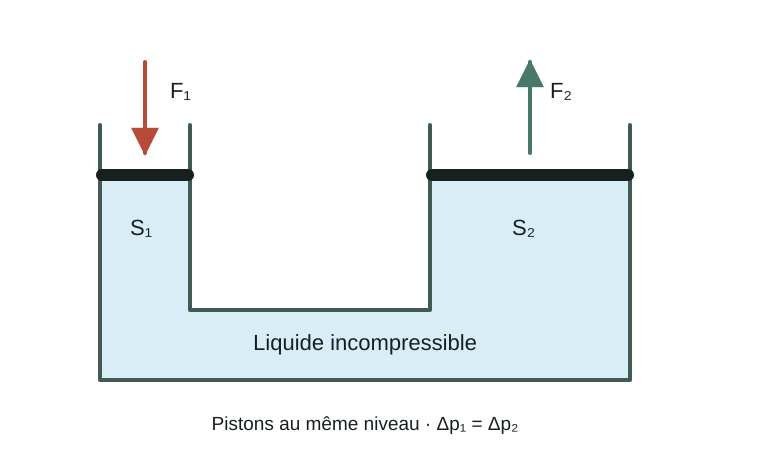
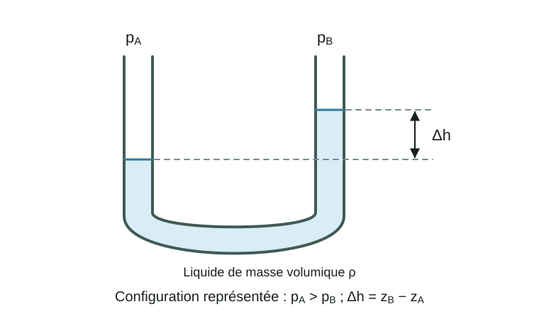
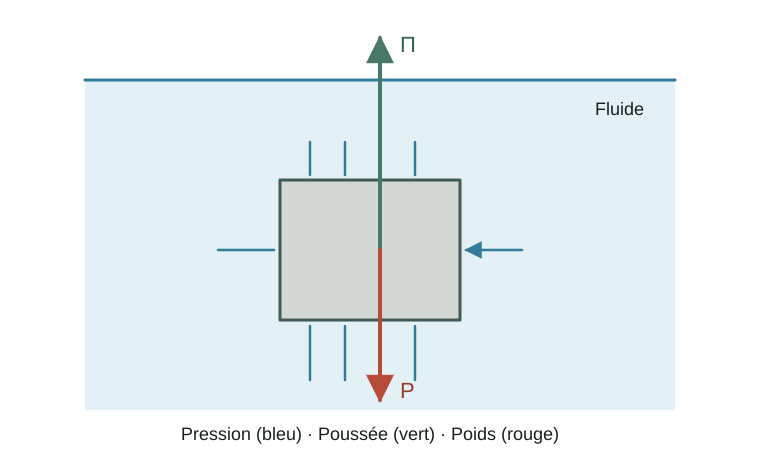

Fluides au repos et forces de pression
En hydrostatique, on s'intéresse aux fluides au repos. L'objectif principal est de déterminer la pression en tout point d'un fluide, qu'il soit compressible ou incompressible.
L'équation fondamentale de l'hydrostatique découle directement de la deuxième loi de Newton,
Pour un fluide au repos,
et la résultante des forces agissant sur tout élément de fluide doit donc être nulle.
Deux types de forces peuvent agir sur un élément de fluide :
les forces volumiques, qui agissent sur l'ensemble du volume du fluide ;
les forces surfaciques, qui agissent sur sa surface.
Dans les situations étudiées ici, la force volumique sera essentiellement la force gravitationnelle. Pour un élément de volume \(dV\),
où \(\rho\) représente la masse volumique du fluide.
En choisissant l'axe \(z\) orienté vers le haut,
et donc
Les forces surfaciques sont dues à la pression exercée par le fluide environnant. Sur un élément de surface orienté
la force de pression est
Le signe négatif indique que la force de pression est dirigée vers l'intérieur de l'élément de fluide, contrairement au vecteur normal \(\vec n\), orienté vers l'extérieur.
Relation fondamentale de l'hydrostatique
Considérons un volume quelconque \(V\) de fluide au repos. La deuxième loi de Newton donne
Ainsi,
En utilisant le théorème de Green–Ostrogradski,
on obtient
Cette relation devant être vraie pour tout volume \(V\), on trouve
Cette équation constitue la relation fondamentale de l'hydrostatique.
Avec l'axe \(z\) orienté vers le haut,
et par conséquent
La pression diminue donc lorsque l'altitude augmente.
Attention : le signe négatif provient du choix de l'axe \(z\) orienté vers le haut. Si l'axe vertical était orienté vers le bas, le signe serait positif.
Fluide incompressible
Pour un fluide incompressible, la masse volumique \(\rho\) est constante.
L'équation (14) devient
En intégrant entre deux points \(i\) et \(f\),
d'où
Finalement,
On peut également écrire
Cette relation montre immédiatement que la pression augmente avec la profondeur.
Question : qu'est-ce qui changerait dans l'équation (18) si nous avions défini l'axe vertical vers le bas ?
Pression absolue et pression relative
Dans de nombreuses situations, il est utile de distinguer la pression absolue de la pression relative, également appelée pression manométrique.
La pression absolue est mesurée par rapport au vide, tandis que la pression relative est mesurée par rapport à la pression atmosphérique :
Ainsi, à la surface libre d'un réservoir ouvert,
et donc
À une profondeur \(h\) sous la surface libre,
tandis que
Fluide compressible
Pour un fluide compressible, la masse volumique varie avec la pression. Il est donc nécessaire d'introduire une équation d'état reliant \(\rho\) et \(p\).
Le modèle le plus simple est celui du gaz parfait :
Comme
on obtient
On suppose ici que la température \(T\) est constante avec l'altitude.
Ainsi,
En substituant cette expression dans l'équation fondamentale,
On sépare les variables :
Après intégration entre \(z_i\) et \(z_f\),
Finalement,
Cette relation montre que, dans une atmosphère isotherme idéale, la pression diminue exponentiellement avec l'altitude.
Le principe de Pascal
Considérons maintenant un fluide incompressible au repos et confiné dans un récipient.
D'après l'équation fondamentale,
Si une variation de pression \(\Delta p\) est appliquée en un point du fluide, cette variation est transmise à l'ensemble du fluide.
Principe de Pascal : Toute variation de pression appliquée à un fluide incompressible confiné est transmise intégralement à l'ensemble du fluide et aux parois du récipient.
Ce principe constitue la base du fonctionnement de nombreux systèmes hydrauliques : presses, vérins, freins hydrauliques, etc.
La presse hydraulique
Considérons deux pistons reliés par un liquide incompressible.

Une force \(F_1\) appliquée sur le premier piston de surface \(S_1\) produit une augmentation de pression
Le principe de Pascal impose
donc
Ainsi,
Une petite force peut donc produire une force importante si \(S_2\gg S_1\).
Mais attention : une presse hydraulique ne crée pas d'énergie !
La conservation du volume impose
Par conséquent,
On retrouve alors
Le gain en force est donc compensé par une diminution du déplacement.
Le manomètre
Un manomètre permet de mesurer une différence de pression à partir de la différence de hauteur entre deux colonnes de liquide.
Considérons un tube en U contenant un liquide de masse volumique \(\rho\).

Dans un même liquide au repos,
En comparant les deux branches du manomètre, on obtient
où le signe dépend naturellement de la différence de niveau observée.
Ainsi, une différence de pression est directement convertie en une différence de hauteur mesurable.
La poussée d'Archimède
La poussée d'Archimède est une conséquence directe du gradient de pression dans un fluide.
La pression augmente avec la profondeur. La partie inférieure d'un objet immergé est donc soumise à des forces de pression plus importantes que sa partie supérieure. La résultante des forces de pression est ainsi dirigée vers le haut.

La force résultante exercée par la pression sur la surface \(S\) de l'objet est
En appliquant le théorème de Green–Ostrogradski,
où \(V_d\) représente le volume de fluide déplacé.
D'après l'équation fondamentale de l'hydrostatique,
Si \(\rho_f\) est uniforme,
Avec l'axe \(z\) orienté vers le haut,
La norme de la poussée d'Archimède est donc égale au poids du fluide déplacé.
Principe d'Archimède : Tout corps totalement ou partiellement immergé dans un fluide subit une force verticale dirigée vers le haut dont la norme est égale au poids du fluide déplacé.
Il faut faire attention à ne pas confondre :
\(\rho_f\) : masse volumique du fluide ;
\(\rho_o\) : masse volumique de l'objet ;
\(V_d\) : volume de fluide déplacé, égal au volume immergé de l'objet.
Objet totalement immergé
Pour un objet homogène totalement immergé de volume \(V\),
et
La résultante est donc
Ainsi,
Objet flottant
Lorsqu'un objet flotte à l'équilibre, seule une fraction de son volume est immergée.
L'équilibre vertical impose
Ainsi,
On obtient donc
La fraction immergée dépend uniquement du rapport entre la masse volumique de l'objet et celle du fluide.
Remarque : fluide soumis à une accélération
La relation fondamentale peut être généralisée lorsqu'un fluide est observé dans un référentiel accéléré.
On peut introduire une gravité effective
où \(\vec a_0\) est l'accélération du référentiel.
L'équation hydrostatique devient alors
La poussée d'Archimède généralisée s'écrit donc
La poussée est ainsi opposée à la direction de la gravité effective.
Exercices rapides
Exercice 1 — Pression au fond d'un réservoir
Un réservoir ouvert contient de l'eau jusqu'à une hauteur
On prendra
et
Calculer la pression relative au fond du réservoir.
Calculer la pression absolue au fond du réservoir.
Que devient la pression au fond si la surface horizontale du réservoir est doublée sans modifier la hauteur d'eau ?
La pression au fond dépend-elle du volume total d'eau contenu dans le réservoir ?
Exercice 2 — Manomètre
Un manomètre en U contenant de l'eau est relié à un réservoir contenant un gaz. L'autre branche est ouverte à l'atmosphère.
La différence entre les niveaux d'eau est
On prendra
Calculer la différence entre la pression du gaz et la pression atmosphérique.
Calculer la pression absolue du gaz si
\[p_{\mathrm{atm}} = 1{,}013\times10^5\,\mathrm{Pa}.\]Que deviendrait la différence de hauteur si l'eau était remplacée par un liquide deux fois plus dense ?
Exercice 3 — Presse hydraulique
Une presse hydraulique possède deux pistons de surfaces
Une force
est appliquée sur le petit piston.
Calculer l'augmentation de pression produite dans le liquide.
Calculer la force \(F_2\) exercée par le grand piston.
Déterminer le facteur d'amplification de la force.
Si le petit piston descend de \(40\,\mathrm{cm}\), de quelle distance le grand piston monte-t-il ?
Vérifier la conservation du travail mécanique dans le cas idéal.
Exercice 4 — Poussée d'Archimède
Un cube de côté
et de masse
est entièrement immergé dans l'eau.
Calculer le volume du cube.
Calculer son poids.
Calculer la poussée d'Archimède.
Calculer la résultante des forces.
Si le cube est lâché sans vitesse initiale, dans quelle direction commence-t-il à accélérer ?
Calculer son accélération initiale en négligeant les forces de traînée.
Exercice 5 — Objet flottant
Un bloc homogène de masse volumique
flotte à la surface de l'eau.
Quelle fraction de son volume est immergée ?
Quelle fraction de son volume se trouve au-dessus de l'eau ?
La réponse dépend-elle de la masse totale du bloc ?
Que se passerait-il si ce même bloc était placé dans un liquide de masse volumique
\[\rho_f=700\,\mathrm{kg\,m^{-3}}?\]
À retenir
Pour un fluide au repos,
Pour un liquide incompressible dans un champ de pesanteur uniforme,
À une profondeur \(h\) sous une surface libre,
Principe de Pascal :
Manomètre simple :
Poussée d'Archimède :
Pour un objet flottant :
Chapitre 2 · Fluides parfaits → ← Retour aux supports de cours